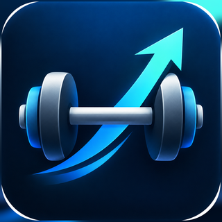

PTapp
Trainingsplan mit Sätzen, Gewichten und Verlauf
Auf den Startbildschirm legen
Der einfachere Weg, ganz ohne Installation:
- Oben Im Browser öffnen antippen.
- Im Chrome-Menü (drei Punkte) Zum Startbildschirm hinzufügen wählen.
- Fertig — eigenes Icon, eigener Vollbildstart, funktioniert ohne Netz.
Oder als APK installieren
- Android-App laden antippen und den Download bestätigen.
- Die Datei aus der Download-Leiste öffnen.
- Android fragt nach der Erlaubnis für Apps aus dieser Quelle — erlauben.
Die App ist selbst signiert, nicht aus dem Play Store. Die Warnung dabei ist normal.
Gut zu wissen
- Alle Daten bleiben auf dem Gerät. Kein Konto, keine Cloud.
- Browser-Fassung und installierte App führen getrennte Verläufe. Zum Umziehen: Mehr → Daten sichern, dann drüben einlesen.